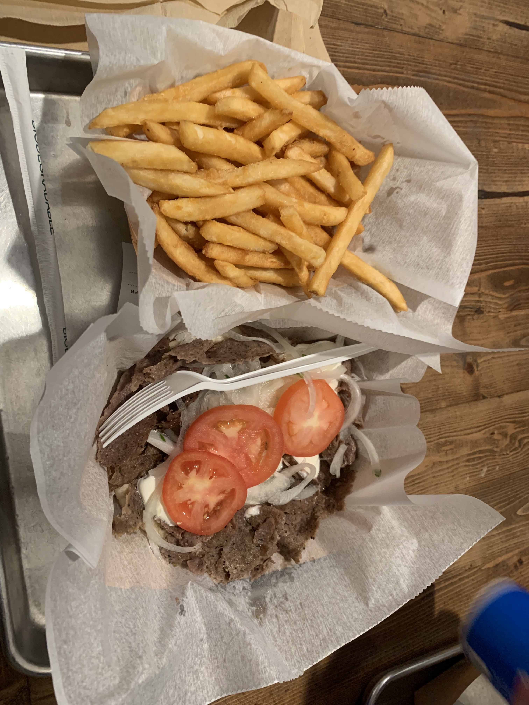

Wisconsin is known for its cheese, beer, and bratwurst.
These bite-sized pieces of cheese are typically made from fresh cheddar cheese. They're often served deep-fried and can be found at many local restaurants and bars.
Friday fish fry is a longstanding tradition in Wisconsin. Many restaurants and bars offer a fish fry menu on Fridays, typically featuring fried cod, coleslaw, and fries.
Kringles are a Danish pastry that's popular in Wisconsin. They're typically made with layers of buttery pastry dough and filled with fruit, nuts, or other sweet fillings.
